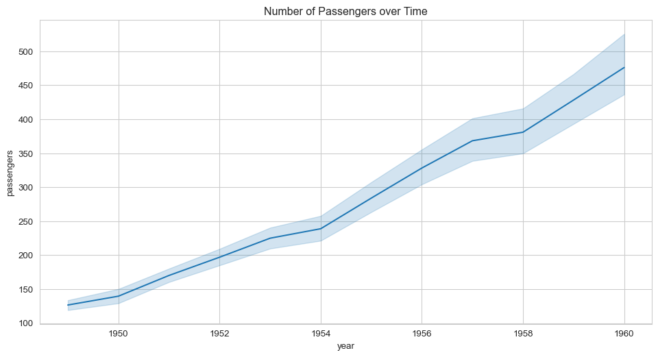
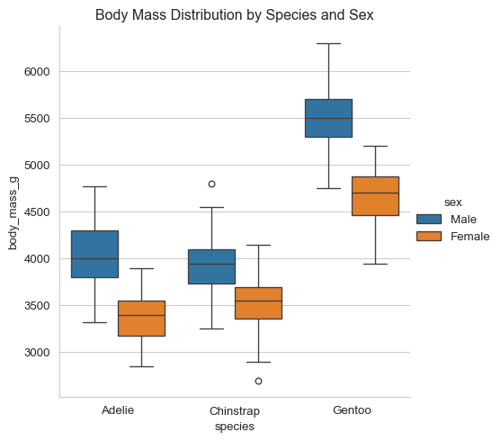

Code
import seaborn as sns
import matplotlib.pyplot as plt
import pandas as pd
import numpy as np
# Set the style for all plots
sns.set_style("whitegrid")Seaborn Plotting Library
Seaborn is a powerful Python data visualization library built on top of Matplotlib. It provides a high-level interface for drawing attractive statistical graphics. Seaborn is particularly useful for creating complex visualizations with just a few lines of code.
Key features: - Built-in themes for attractive plots - Statistical plot types - Integration with Pandas DataFrames - Automatic estimation and plotting of statistical models
To use Seaborn, you need to import it along with other necessary libraries:
For these examples, we’ll use various built-in datasets provided by Seaborn. These datasets are included with the library and are commonly used for demonstration purposes.
Useful for showing relationships between two continuous variables.
total_bill tip sex smoker day time size
0 16.99 1.01 Female No Sun Dinner 2
1 10.34 1.66 Male No Sun Dinner 3
2 21.01 3.50 Male No Sun Dinner 3
3 23.68 3.31 Male No Sun Dinner 2
4 24.59 3.61 Female No Sun Dinner 4The ‘tips’ dataset contains information about restaurant bills and tips. It’s a classic dataset used for demonstrating various plotting techniques.
Ideal for time series data or showing trends.
year month passengers
0 1949 Jan 112
1 1949 Feb 118
2 1949 Mar 132
3 1949 Apr 129
4 1949 May 121
The ‘flights’ dataset contains information about passenger numbers for flights over time. It’s useful for demonstrating time series visualizations.
Great for comparing quantities across different categories.
survived pclass sex age sibsp parch fare embarked class \
0 0 3 male 22.0 1 0 7.2500 S Third
1 1 1 female 38.0 1 0 71.2833 C First
2 1 3 female 26.0 0 0 7.9250 S Third
3 1 1 female 35.0 1 0 53.1000 S First
4 0 3 male 35.0 0 0 8.0500 S Third
who adult_male deck embark_town alive alone
0 man True NaN Southampton no False
1 woman False C Cherbourg yes False
2 woman False NaN Southampton yes True
3 woman False C Southampton yes False
4 man True NaN Southampton no True The ‘titanic’ dataset contains information about passengers on the Titanic, including their class, sex, age, and survival status.
Useful for showing distribution of data across categories.
Similar to box plots but show the full distribution of data.
Excellent for visualizing correlation matrices or gridded data.
species island bill_length_mm bill_depth_mm flipper_length_mm \
0 Adelie Torgersen 39.1 18.7 181.0
1 Adelie Torgersen 39.5 17.4 186.0
2 Adelie Torgersen 40.3 18.0 195.0
3 Adelie Torgersen NaN NaN NaN
4 Adelie Torgersen 36.7 19.3 193.0
body_mass_g sex
0 3750.0 Male
1 3800.0 Female
2 3250.0 Female
3 NaN NaN
4 3450.0 Female The ‘penguins’ dataset contains size measurements for three penguin species observed on three islands in the Palmer Archipelago, Antarctica.
Seaborn is particularly powerful when working with Pandas DataFrames, as it can automatically infer variable types and choose appropriate plot types.
Recall the structure of the penguins dataframe, which has a combination of measured and categorical values:
species island bill_length_mm bill_depth_mm flipper_length_mm \
0 Adelie Torgersen 39.1 18.7 181.0
1 Adelie Torgersen 39.5 17.4 186.0
2 Adelie Torgersen 40.3 18.0 195.0
3 Adelie Torgersen NaN NaN NaN
4 Adelie Torgersen 36.7 19.3 193.0
body_mass_g sex
0 3750.0 Male
1 3800.0 Female
2 3250.0 Female
3 NaN NaN
4 3450.0 Female We can explore the distribution of every numerical variable as well as the pair-wise relationship between all the variables in a dataframe using pairplot and can use a categorical variable to further organize the data within each plot using the hue argument.

regplot and lmplot) can automatically fit and visualize linear regressions.pairplot function and FacetGrid class are powerful for creating multi-panel plots to explore complex datasets.Remember, while Seaborn is powerful, it’s built on matplotlib. For more customization options, you might need to use matplotlib functions directly.